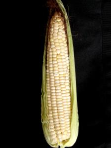
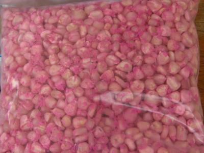
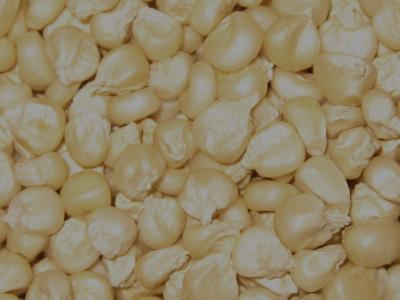
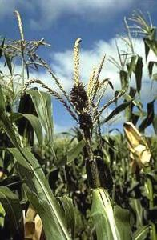
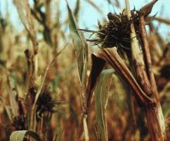
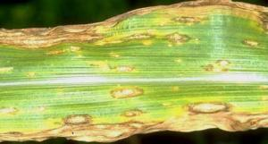
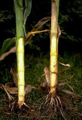
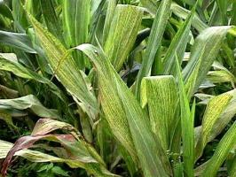

{kind=link}
{kind=link}
Introduction
Maize has for many years been the crop against which food security is measured in Kenya. However, when it comes to seed supply, farmers are often at the mercy of large seed companies and may not always be able to get the kind of seed they want. In many maize producing areas farmers have kept and multiplied old maize varieties, which over time have become better adapted to their climatic zones, better able to withstand extreme weather conditions and at least provide them with a yield when hybrids fail.
Also Kenya Agricultural and Livestock Research Organization (KALRO) has maintained some of the old open pollinated varieties for their research and developed new ones especially for dryland areas, where the seed companies do not have much to offer. The following is a listing of best practices for maintaining and developing the best type of maize seed for particular areas. Farmers interested in maintaining their own seed supply can possibly find inspiration here.
|  |
| A healthy maize cob |
| (c) A.A. Seif, icipe
|
Production of own maize seed by smallholder farmers
|  |
| Maize seed 'KCB' treated with seed dressants (fungicide plus insecticide) |
| (c) A.A. Seif, icipe
|
|  |
| Maize seed untreated with chemicals |
| (c) A.A. Seif, icipe
|
How to produce on-farm own seed from non-hybrid (open pollinated) maize varieties
Sources of seed
Basic procedure in producing own seeds:
- Off-type plants: should be removed/discarded all off-type plants before flowering.
- The selected plants should have well filled cobs not damaged by birds or attacked by insect pests (e.g. stalk borers) and not infected with ear rots.
- The cobs must be matured and dry at picking. Sufficiently dry seed cracks when bitten. For planting, take seeds from the middle and bottom of the cob.
- If there is another maize crop of different variety next to your field or near it (less than 300 metres), select plants in central part of your field and / or farthest from the neighbouring maize crop.
- In organic farming it is not allowed to treat the seeds with a fungicide and insecticide before sowing. Home grown seeds treated with a copper compound such as copper oxychloride or copper sulphate would be acceptable in organic production in Kenya. Copper is a powerful fungicide and also repels insects and provides a starter nutrition for the seeds in areas where soils are deficient in Copper. 200 g of copper compound /50 kg seed maize will be sufficient. If you are growing organic maize, consult your Organic Certification Body
Guide to knowing disease affected plants
How a head smut infected maize plant looks:
The first symptoms become evident when tassels and cobs (ears) appear. These parts may be completely or partly converted into smut galls (these are body mass containing fungal spores). Smut galls are initially covered by a delicate membrane that breaks open and exposes a mass of reddish-brown to black spores of the fungus and strands of vascular tissue. The strands or fibres in the galls distinguish this disease from other smut diseases. Head smut is seed-borne.
|  |
| Partial infection by head smut fungus (Sphacelotheca reiliana) of the tassel of maize |
| (c) Courtesy EcoPort (http://www.ecoport.org): David C. Nowell
|
How a downy mildew (crazy top) infected maize plant looks:
|  |
| Crazy top downy mildew (Sclerospora graminicola) |
| (c) Courtesy EcoPort (http://www.ecoport.org): J. Kranz
|
How southern leaf blight infected maize looks:
|  |
| Southern leaf blight (Cochliobolus heterostrophuson) on maize |
| (c) Courtesy EcoPort (http://www.ecoport.org) : LandCare Ltd., New Zealand
|
How a Stewart's wilt infected maize plant looks:
|  |
| Basal stalk rot caused by Gibberella zeae on maize. Healthy plant on the left and infect plant on the right |
| (c) Courtesy EcoPort (http://www.ecoport.org): David C. Nowell
|
How ear rots look:
Seed plot system
Site selection
Isolation
Soil
Planting time
Plant population
Fertilisation
Weed control
|  |
| Maize leaf streak virus |
| (c) A. A. Seif, icipe
|
Insect pest and disease control
Plants infected with downy mildew, smuts, southern leaf blight, Stewart's wilt and streak virus should be pulled out and destroyed by burning.